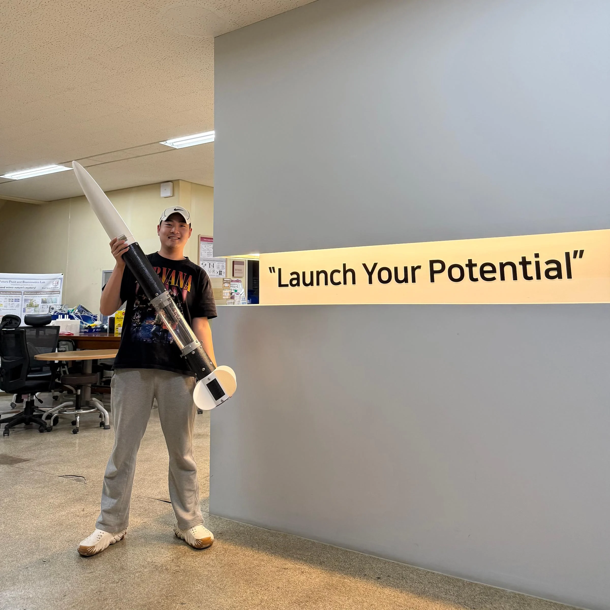
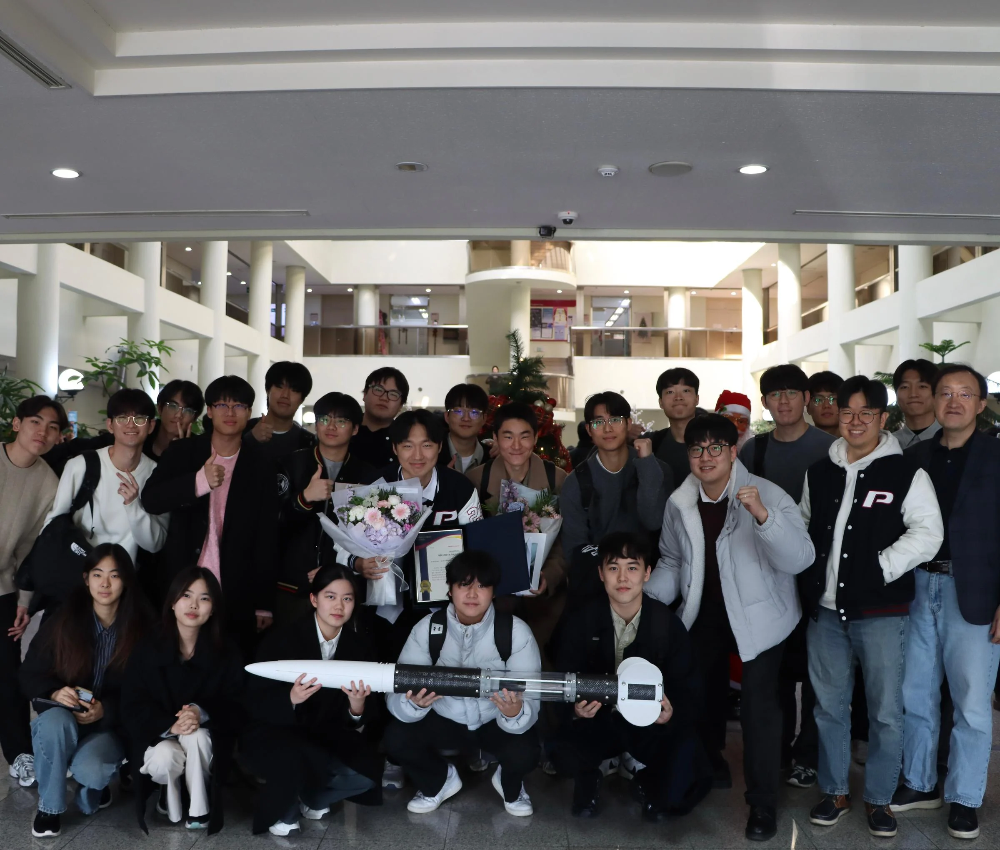

Research division
Five research teams are described in the September 2026 introduction. Teams work through the year, report progress and prepare conference presentations.
PSI / POSTECH
PSI is a student aerospace research group in POSTECH Mechanical Engineering. We bring together rocket and aircraft projects, year-long research and the education that helps students take part.


How PSI began
Students began preparing the programme in 2023. PSI’s organisation record gives 20 February 2024 as its founding date; the group adopted its present research-group name in 2025. These are different steps in the same origin story.
The founder’s first-person account, published by POSTECH in May 2026, describes how students brought the programme together. Read it for the people and decisions behind the launch record.
Read the founder’s storyResearch and competition activity are supported by people who maintain equipment, coordinate resources, communicate the work and help newcomers learn.
Five research teams are described in the September 2026 introduction. Teams work through the year, report progress and prepare conference presentations.
The Rocket Team develops and launches solid rockets for NURA activity. The Aircraft Team works on the design and fabrication of quadrotor and VTOL aircraft.
Equipment, workspace and documentation for competitions, conferences and launches.
Coordination of the resources that teams need to carry out their work.
Activity stories, recruitment announcements, member events and connections.
Newcomer learning, Freshman Research Participation and internal seminars.
Publicly listed by PSI; checked 17 September 2026. These are the roles shown in the public directory.

The public register lists POSTECH Mechanical Engineering support from 2024 onward.
APEC–APRU and LINC 2.0 are listed as completed support for 2024–2025. These are historical programmes, not current commercial sponsorships.
View PSI’s public introductionMeet the people, explore an introductory notebook or find the latest recruitment announcement. You do not have to arrive with a finished research idea.
Find your way into PSI